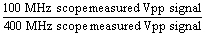
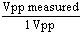
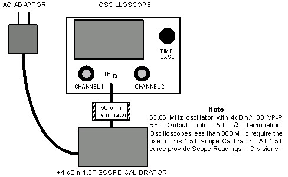

Operating Documentation
Direction 5440001-3, Rev# 6
Signa HDxt Service Methods
Module Version 1.0, Version Date 5/15/07
Operating Documentation |
| NOTE: | THIS PROCEDURE REQUIRES THAT THE SCOPE IN USE HAS A BANDWIDTH OF AT LEAST 100 MHZ. DO NOT ATTEMPT TO PERFORM RF POWER MEASUREMENTS WITH AN OSCILLOSCOPE THAT HAS A BANDWIDTH LESS THAN 100 MHZ. SIGNIFICANT MEASUREMENT ERRORS CAN RESULT. |
The scope correction factor for the scope channel in use must be known for oscilloscopes with a bandwidth < 300 MHz. One may assume that the correction factor is 1 (unity) for oscilloscopes with a bandwidth ≥ 300 MHz. Do not assume a correction factor for an input channel and do not assume that all the scope input channels have the same correction factor. Each channel must be characterized separately. There are three ways that this can be done.
One way that the scope channel characterization can be accomplished is to request this information from the metrology lab the next time the scope is sent back for calibration. Attach a tag in a conspicuous location on the scope before it is sent back for calibration requesting this information. Ask that the percent of signal loss at 63.86 MHz (1.5T) and 42 MHz (1.0T) be measured at the 5 volt/div and 2 volt/div settings (for body and head measurements, respectively) for both scope channels and that this information be included with the returned scope. The metrology lab can usually do this upon request and without charge during the calibration process.
A 400 MHz scope exhibits negligible measurement error at 63.86 MHz or 42 MHz. If a 400 MHz scope is available then it can be compared side-by-side on site with a scope of < 300 MHz bandwidth. Be sure the scope inputs have a 1Mohm impedance and then are terminated with a 50 ohm feed-through adapter before making the measurements. Be sure to characterize all the inputs that are to be used. The signal loss at 63.86 MHz (1.5T) and 42 MHz (1.0T) for each channel at the 5 volt/div and 2 volt/div settings can be determined from the ratio of signal measured on the 100 MHz scope to that seen on the 400 MHz scope

As long as the same cables are used the loss can also be determined for each cable.
The RF Power Measurement Kit contains a 63.86 MHz, 4dBm (1 Vpp) calibrated signal reference that can be used to characterize the scope input channels. Be aware that these values are accurate only for 1.5T systems.
Connect the calibrated reference to the scope as in Illustration 1 below.
Set the scope amplitude for the channel to be checked to 0.2 volts/div.
Set the sweep rate to 5 nsec.
Confirm that the channel input impedance is set for 1Mohm and not 50 ohms.
Confirm that the scope bandwidth limit switch is not enabled.
Confirm that the "Uncal" knob is not rotated and the channel is not uncalibrated.
Carefully measure the peak to peak voltage from the calibrated source. The measured value should be 1 Vpp or less.
Calculate the correction factor (it should be less than 1):

Repeat this process and derive the correction factor for the other scope input channel(s).
Note these correction factors for each channel on a piece of tape affixed to the scope for later reference.
Illustration 1: 1.5T SCOPE CALIBRATOR CONNECTIONS
